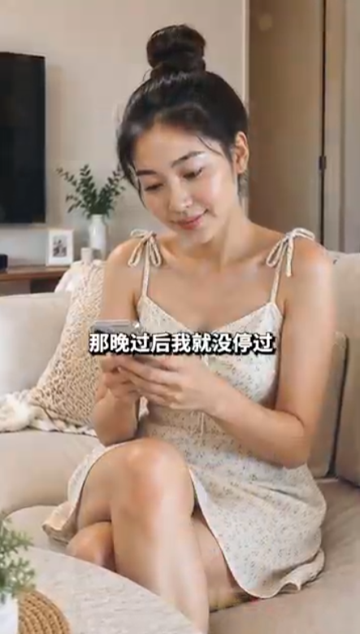
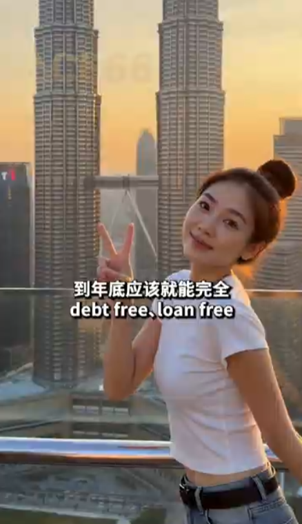

从自律到自由：一位都市女孩的理财与自我成长蜕变之路

生活的转折点，往往源于一个看似平常的决定。只要勇敢迈出第一步，并持之以恒地付诸努力，平淡的日常也能蜕变成充满希望的精彩篇章。
几个月前的一个夜晚，小雯坐在客厅的沙发上，看着手机里关于个人财务规划和技能提升的线上课程，下定决心要改变生活。从那天起，她每天利用业余时间学习理财记账、拓展技能，“那晚过后我就没停过”，这句话记录着她每日坚持自律与提升的踏实足迹。
1. 积小流成江海：坚持与自律带来的蜕变
真正的改变从不需要惊天动地的宣言，而是体现在日常每一个细微的选择中：
清晰规划财务：学会理性消费与合理预算，将每一份收入都规划得井井有条。
持续自我增值：利用碎片化时间学习新技能，不断提升专业能力与生活综合素养。
保持积极心态：遇到挑战时不轻言放弃，用长远的眼光看待个人的成长与积累。

2. 拥抱辽阔未来：无债一身轻的自信与从容
站在高层阳台上，夕阳的金辉洒在吉隆坡标志性的双峰塔上。小雯微笑着向镜头比出胜利的剪刀手，眼神中充满了对未来的期许与笃定。通过数月如一日的自律与努力，她不仅重构了自己的财务健康，也离目标越来越近：“到年底应该就能完全 debt free, loan free！”
“财务的独立与从容，不仅是数字上的清零与增长，更是内心底气的提升。当你开始掌控自己的生活，整个世界都会为你展现美好的模样。”
这份无债一身轻的从容，是她给予自己最好的礼物。站在城市之巅俯瞰辽阔风景，她知道，未来的每一步都将走得更加轻盈而有力量。
总结
生活的自主权始终掌握在自己手中。只要心怀目标，脚踏实地去经营与努力，每个人都能克服困难，走向属于自己的自由与广阔天地。
保持自律，热爱生活，愿我们都能在追求美好生活的道路上，收获满满的自信与幸福。
本文内容为正能量生活励志故事分享，旨在传递积极向上的生活态度，仅供参考。